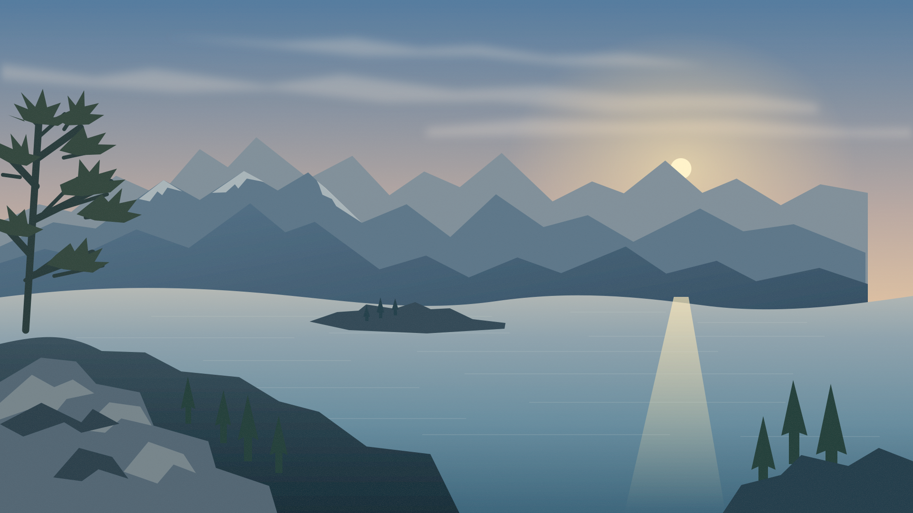

ModGrundig
Tasarım önizlemesi · Test kanalları

Kayıt · Örnek
GRUNDIG
TV
İzle & Dinle
Ayarlar
Görüntü
GRUNDIG
TV
Kanal Listesi
GRUNDIG
TV
Kaynak
GRUNDIG
Kanal seçimi
OK ile izle
Sessiz
Menü
M
Seç
Enter
Geri
Esc
Kumanda
F1
Örnek yayınlar
·
TV entegrasyonu doğrulanmadı
Kumanda
F1
TV kumandası
F1
Bekleme
P
TV rehberi
G
USB
U
Menü
Geri
Bilgi
Kaynak
▲
◀
OK
▶
▼
+
Ses
−
Sessiz
+
Kanal
−
1
2
3
4
5
6
7
8
9
0
Favori
F2
Atla
F3
Kilitle
F4
Önceki kanal
R
Rakamı sil
⌫
Altyazı
Ses dili
Teletekst
Kayıt
Oynat / Duraklat
Durdur
Bağlantı denemesi
HDMI
CEC
ARC
CEC kabulü